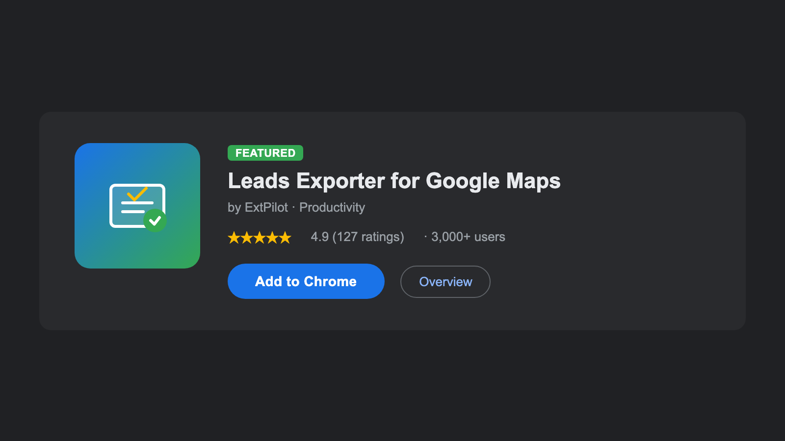
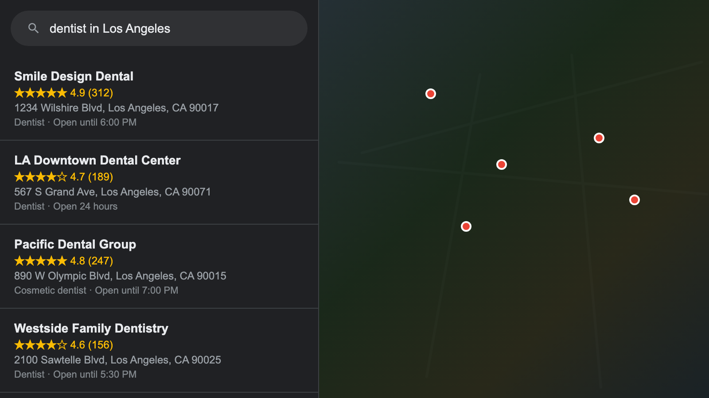
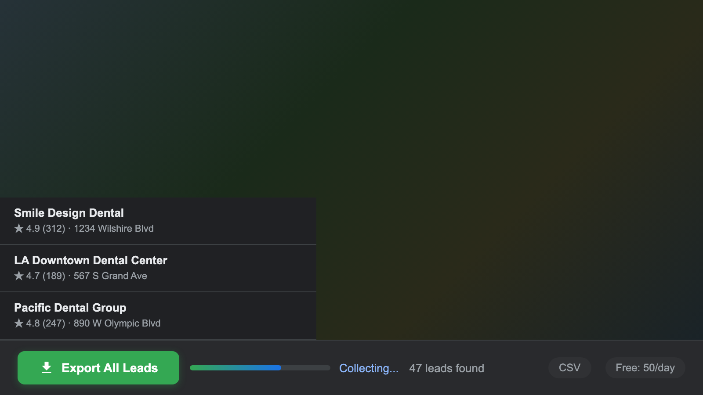
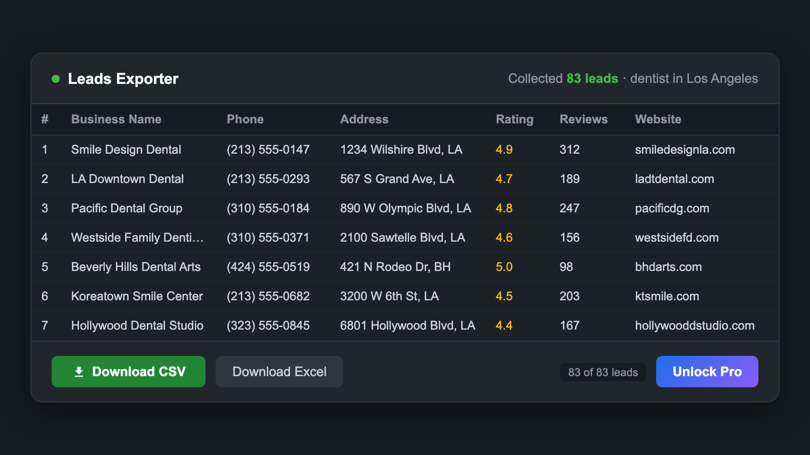

How to Export Google Maps Business Data to CSV (Free Guide 2026)
Why Export Business Data from Google Maps?
Google Maps is the largest business directory on the planet. Every local business — from plumbers and dentists to restaurants and law firms — has a listing with their name, address, phone number, website, reviews, and hours of operation. That is a goldmine of contact data sitting in plain sight.
The problem is that Google Maps does not have a "Download" button. If you need 100 plumbers in Denver or 200 restaurants in Miami, your options are:
- Copy and paste manually — works for 5 businesses, not 500
- Buy a lead database — expensive ($50-200/month) and often outdated
- Use a scraping API — requires coding and configuration
- Use a browser extension — one click, no setup, free tier available
A browser extension is the fastest option for most people. You search on Google Maps exactly like you normally would, and the extension adds an export button to the page. No API keys, no coding, no third-party accounts.
Step-by-Step Guide: Export Leads with Leads Exporter
Step 1: Install the extension
Add Leads Exporter for Google Maps from the Chrome Web Store (also available on Edge Add-ons). It installs in about 10 seconds. No account, no sign-up, no credit card.

Step 2: Search for businesses on Google Maps
Go to Google Maps and search for any business type plus a location. For example:
- "dentist in Los Angeles"
- "plumber in Chicago"
- "Italian restaurant in New York"
- "real estate agent in Austin TX"
Google Maps will show a list of results on the left side. This is the data the extension will export.

Step 3: Click "Export All Leads"
Once search results load, a green "Export All Leads" button appears above the listing panel. Click it.
The extension automatically scrolls through all Google Maps results, loading more businesses as it goes. A typical search yields 20 to 120 businesses depending on the area and category. You will see a progress counter as it works.

Step 4: Preview and download your CSV
When the scroll finishes, click the extension icon in your toolbar. You will see a data table with all the businesses it collected. Review the data, then click "Download CSV" to save your file.
Open the CSV in Google Sheets, Excel, or import it directly into your CRM. The column headers are standardized (Name, Address, Phone, Website, Rating, Reviews, Category) so most tools recognize them automatically.

What Data Can You Export?
Here is every field available in the exported file:
| Data Field | Free | Pro |
|---|---|---|
| Business Name | Yes | Yes |
| Full Address | Yes | Yes |
| Phone Number | Yes | Yes |
| Website URL | Yes | Yes |
| Google Rating (1-5) | Yes | Yes |
| Review Count | Yes | Yes |
| Business Category | Yes | Yes |
| Email Address | — | Yes |
| Contact Page URL | — | Yes |
| Facebook, Instagram, LinkedIn, Twitter | — | Yes |
All data is cleaned before export. Phone numbers are formatted consistently, addresses are standardized, and column headers follow a naming convention that CRMs like HubSpot, Salesforce, Zoho, and Pipedrive recognize out of the box.
Free vs Pro: Which Plan Do You Need?
The free plan is enough if:
- You need fewer than 50 leads per day
- You only need basic contact info (name, phone, address, website)
- CSV format works for your workflow
Upgrade to Pro ($4.9/month) if:
- You need unlimited leads per day for large-scale prospecting
- You want email addresses — Pro automatically visits each business website and extracts publicly available emails (40-60% success rate)
- You want social media links (Facebook, Instagram, LinkedIn, Twitter)
- You need Excel (.xlsx) export in addition to CSV
Pro also offers an annual plan at $3.9/month (billed yearly) if you plan to use it long-term. Both plans process all data locally in your browser — nothing is sent to external servers.
Tips for Better Lead Generation on Google Maps
1. Be specific with your search queries
"Plumber" returns generic nationwide results. "Emergency plumber in Brooklyn NY" returns a focused, location-specific list. The more specific your query, the more relevant your leads.
2. Use Google Maps filters
After searching, use Google Maps' built-in filters like "Open now," rating filters, or price level. The extension exports whatever results are currently visible, so filtering first means cleaner data.
3. Search multiple neighborhoods for the same city
Google Maps caps results at roughly 120 per search. For a large city, run separate searches for each neighborhood or zip code. "Dentist in Downtown Miami" and "Dentist in Coral Gables" will give you different results with minimal overlap.
4. Combine with email outreach
Export leads with the Pro plan to get emails, then import the CSV into your email tool (Mailchimp, Lemlist, Instantly, or even Gmail mail merge). A targeted list of 100 local businesses with verified emails beats a generic purchased list of 10,000.
5. Check ratings and review counts
The exported data includes Google ratings and review counts. A business with 200+ reviews and a 4.5 rating is established and likely has budget for services. A business with 3 reviews might be brand new or a side project. Use this data to prioritize your outreach.
FAQ
Is it legal to export business data from Google Maps?
Leads Exporter reads publicly visible information from Google Maps search results — the same data any person can see by searching on Google Maps. It does not access private data or bypass any login. The extension is officially listed on the Chrome Web Store and complies with Chrome extension policies.
How many leads can I export for free?
50 leads per day with 7 data fields (business name, address, phone, website, rating, review count, category). The daily limit resets at midnight. No sign-up or credit card required.
Can I get email addresses from Google Maps?
Google Maps listings do not directly show email addresses. With the Pro plan, Leads Exporter automatically visits each business website and scans for publicly available emails. The success rate is typically 40-60%, depending on whether the business publishes contact information on their site. For businesses without a public email, you get a direct link to their contact page instead.
Does the exported CSV work with my CRM?
Yes. The CSV and Excel files use standardized column headers (Name, Address, Phone, Website, Email, Rating, etc.) that are compatible with HubSpot, Salesforce, Zoho, Pipedrive, Google Sheets, Microsoft Excel, and most other CRMs and spreadsheet tools.
Will my Google account get banned?
Leads Exporter does not log into your Google account. It reads the search results page that is already loaded in your browser. The extension uses randomized scrolling intervals to mimic natural browsing behavior. That said, running hundreds of searches per hour on Google Maps (with or without any tool) could trigger temporary CAPTCHAs. Normal usage is perfectly safe.
Does it work on Microsoft Edge?
Yes. Leads Exporter is available on both the Chrome Web Store and Microsoft Edge Add-ons. Features and pricing are identical on both browsers.